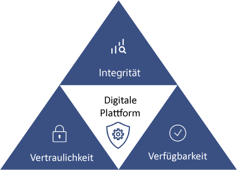

Informationssicherheit für Mitarbeiter
Warum ist Informationssicherheit wichtig?
In der heutigen digitalen Welt sind Datenschutz und Datensicherheit von entscheidender Bedeutung.
Unternehmen und Organisationen, unabhängig von ihrer Größe, müssen sich aktiv mit diesen Themen
auseinandersetzen.
Warum? Weil Datenschutz und Datensicherheit nicht nur gesetzliche Anforderungen erfüllen,
sondern auch das Vertrauen Ihrer Kunden und die Integrität Ihres Unternehmens schützen müssen.
Der Schutz sensibler Informationen, sei es persönliche Kundeninformationen oder geschäftliche
Geheimnisse,
ist ein ethisches Gebot und ein wesentlicher Bestandteil eines verantwortungsvollen Umgangs mit Daten.
Diese Seite informiert Sie darüber, wie ECommerce Solutions GmbH Datenschutz und Datensicherheit
priorisiert,
um sowohl unsere Kunden als auch unsere Mitarbeiter zu schützen. Erfahren Sie mehr über bewährte
Praktiken und Richtlinien,
die dazu beitragen, die Vertraulichkeit und Integrität Ihrer Daten zu gewährleisten.
Richtlinien zur Wahrung von Informationssicherheit
Bei ECommerce Solutions GmbH ist die Sicherheit Ihrer Daten und unserer Firmengeheimnisse von höchster Bedeutung. Wir haben klare Sicherheitsrichtlinien und bewährte Praktiken etabliert, um den Schutz Ihrer Informationen zu gewährleisten. Unsere Sicherheitsmaßnahmen umfassen:
Vertraulichkeit & Integrität:
- Firmen-Dateien dürfen ausschließlich innerhalb des firmeneigenen Ökosystems aufbewahrt werden. Darüber hinaus dürfen Firmen-Konten nur auf firmeneigenen Geräten genutzt werden
- Jeder Mitarbeiter darf nur die eigene Konten benutzen. Dies ist wichtig, damit nicht Konten andere missbraucht werden, um Handlungen im System auszuführen. Deswegen ist es essentiell, dass Firmengeräte stets mit einem Kennwort gesperrt sind, wenn der Mitarbeiter nicht anwesend ist.
- Verdächtige Aktivitäten oder Sicherheitsverletzungen sind umgehend zu melden.
- Jedes Benutzerkonto kann nur auf die Daten zugreifen, die für den Mitarbeiter relevant sind.
- Alle Firmen-Konten erfordern eine 2-Faktor-Authentifizierung.
Sichere Kennwörter
- Die sichersten Kennwörter sind zufällig generiert und in einem sicheren Passwort-Manager aufbewahrt.
- Alternativ können Sie sich ein Kennwort ausdenken, das leicht zu merken, aber schwer zu erraten ist. Verwenden Sie dafür am besten eine Kombination aus mehreren Wörtern oder ganzen Sätzen, die nicht mit persönlichen Informationen wie Geburtsdatum, Haustier, Familie oder anderen leicht zugänglichen Informationen in Verbindung stehen.
- Kennwörte sollten mindestens 12 Zeichen lang sein und Groß- & Kleinbuchstaben, sowie Zahlen und Sonderzeichen enthalten.
Verfügbarkeit:
- Firmen-Daten werden in der Cloud aufbewahrt. Diese wird automatisch doppelt gesichert, sodass Datenverlust unwahrscheinlich wird. Damit dieser Schutz auch funktioniert, ist es wichtig, dass alle Firmen-Daten stets in der Cloud gespeichert werden.
- Das Unternehmen hat ein Intranet (internes Netzwerk, für den Austausch interner Ressourcen). Auf dieses kann von außen nur mit einer VPN zugegriffen werden.
- Eine VPN dient dazu die Sicherheit und Privatsphäre über unsichere Netzwerke hinweg, sowie die sichere Übertragung von Daten zu gewährleisten. Außerdem wird die Online Anonymität gesichert.
Datenschutz
Die Datenschutz-Grundverordnung (DSGVO) ist ein Gesetz in der Europäischen Union, das die Privatsphäre von Menschen schützt. Sie regelt, wie Unternehmen und Organisationen personenbezogene Daten sammeln, speichern und nutzen dürfen. Unternehmen, die gegen diese Regeln verstoßen, können hohe Geldstrafen erhalten.
- Mitarbeiter und Kunden müssen die ausdrückliche Erlaubnis geben, bevor ihre persönliche Informationen gespeichert werden dürfen.
- Unternehmen müssen klar und verständlich erklären, wie sie Daten verwenden, und Menschen haben das Recht zu wissen, welche Daten über sie gesammelt werden, und die Daten löschen zu lassen.
- Unternehmen müssen angemessene Maßnahmen ergreifen, um personenbezogene Daten vor unbefugtem Zugriff oder Verlust zu schützen (siehe Vetraulichkeit & Integrität).
- Datenschutzverletzungen müssen innerhalb von 72 Stunden vom Unternehmen gemeldet werden.
Weitere Maßnahmen:
- Aktualisierung von Software zur Aufrechterhaltung einer sicheren IT-Umgebung.